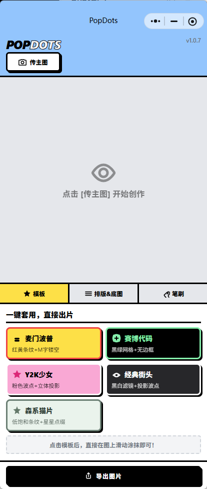
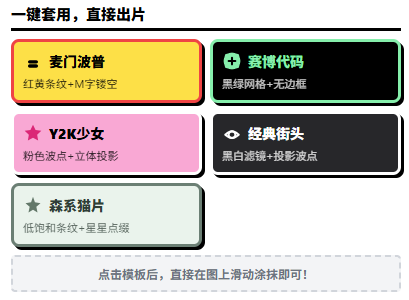
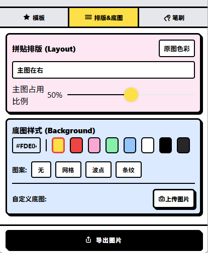
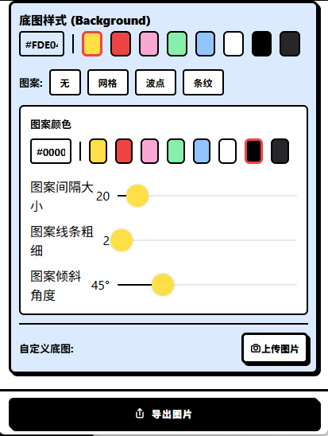
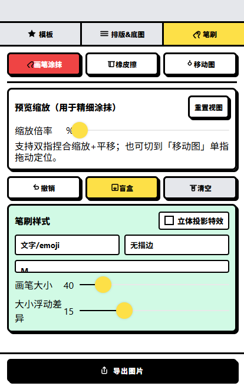
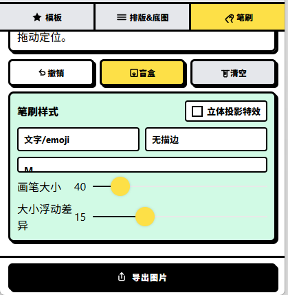
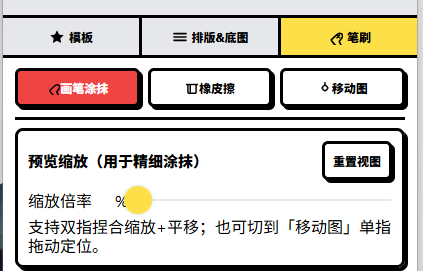
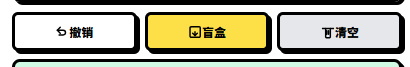
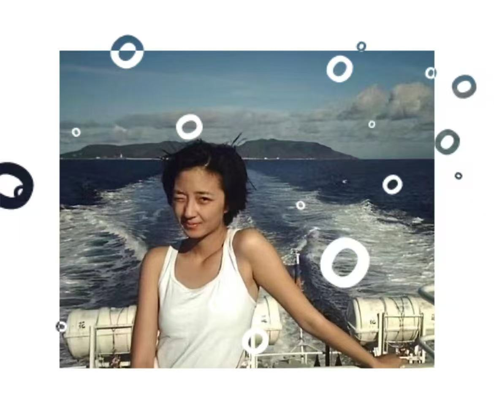
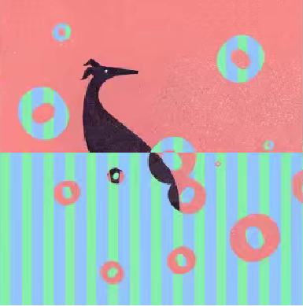

PopDots · 用户文档
最近 INS 上很火的波点拼贴图，想不想也来一张？
项目概览
- 项目类型： C 端图片创作小程序用户文档
- 文档风格： 波普拼贴风 / 轻量创作工具
- 受众： 想快速做出个性化图片的普通用户
- 核心玩法： 上传主图 → 选模板或自定义 → 调整排版与底图 → 添加笔刷效果 → 导出图片
1. 关于 PopDots
1.1 核心玩法：把普通照片变成拼贴感图片
你可能刷到过这种图：
- 半边是人物，半边是高饱和底色；
- 图上有波点、条纹、网格、星星、圆环；
- 看起来有点复古，有点 Y2K，又有点手帐和杂志拼贴感。
PopDots 就是拿来做这种图的。
你只需要传一张主图，选一个喜欢的模板，或者自己调整排版、底图和笔刷，就能生成一张适合发朋友圈、小红书、INS、做头像、做封面的拼贴图。
不用打开复杂修图软件，也不用慢慢抠图、排版。
打开小程序，传图，调一调，出图，就是这么直接。
适合人群：
- 喜欢 INS 风、Y2K、拼贴风的人；
- 想给照片加一点设计感的人；
- 想快速做社交平台配图、头像、封面的人；
- 想轻松玩图、不想上手复杂设计软件的人。
2. 快速上手
🎨 只需三步，就能做出一张波点拼贴图。
2.1 上传主图
第一步：先传一张你想改造的照片
打开 PopDots 后，点击左上角的 传主图 按钮，从相册中选择一张图片。
适合的图片包括：
- 人像照片；
- 证件照；
- 宠物照片；
- 插画图；
- 任意你想加工成拼贴风的图片。

▲ 点击「传主图」，上传你想处理的照片
Tip：什么样的图更容易出效果？
主体清楚、边缘明显、颜色对比比较好的图片，更容易做出有层次的拼贴效果。
2.2 选择模板或自己搭配
上传图片后，可以先从底部的 模板 开始。
目前可以直接选用的模板包括：
- Y2K 少女：粉色波点 + 立体投影，甜一点、轻复古；
- 经典街头：黑白滤镜 + 投影波点，更酷一点；
- 森系猫片：低饱和条纹 + 星星点缀，更清新一点。
模板适合快速出图。
如果你想自己控制画面，可以继续进入 排版 & 底图 和 笔刷 做细调。

▲ 先选模板，快速定下整张图的风格
2.3 导出图片
当你调整满意后，点击底部的 导出图片，就可以保存成图。
无论你是想发社交平台，还是拿来做头像、封面，都可以直接导出使用。
3. 排版与底图
这一部分适合“我想自己调，我想让图更像我”的时候。
3.1 调整主图排版
进入 排版 & 底图 后，可以先调整主图的位置和占比。
目前支持的排版方式包括：
- 主图在右
- 主图在左
- 主图在下
- 主图在上
- 居中悬浮
你还可以调整：
- 主图占用比例
- 让主体更大或更小
- 决定画面是偏“人物主导”还是偏“背景主导”

▲ 可以调整主图位置和主图占比
3.2 调整底图样式
底图不只是换个颜色这么简单。
你可以选择：
- 纯色
- 网格
- 波点
- 条纹
同时还可以继续调：
- 图案颜色
- 图案间隔大小
- 图案线条粗细
- 图案倾斜角度

▲ 底图支持网格、波点、条纹，并可继续调颜色和参数
3.3 自定义底图与双面镂空
如果你想做得更特别，可以上传 自定义底图。
这时可以实现一些更有意思的玩法，比如：
- 一张主图 + 一张底图，做出双图拼贴效果；
- 用另一张图作为背景纹理；
- 做出类似 双面镂空 的视觉效果；
- 让人物和背景之间产生更强的反差感。
这个功能很适合拿来做更有“成品感”的图。
4. 笔刷与装饰
这里就是 PopDots 最好玩的地方。想让画面更满、更有设计感，就来这里加东西。
4.1 可选笔刷类型
进入 笔刷 后，你可以选择不同的装饰类型。
目前支持的笔刷包括：
- 文字 / emoji
- 经典圆点
- Y2K 星星

▲ 笔刷支持文字、经典圆点和 Y2K 星星
如果你想做那种“满屏有元素飘着”的感觉，圆点和星星会很好用。
如果你想做更个人化一点的图，可以直接输入字母、emoji 或符号。
4.2 调整笔刷样式
你还可以继续调整笔刷效果，例如：
- 画笔大小
- 大小浮动差异
- 是否有边框
- 是否使用立体投影特效

▲ 笔刷大小、浮动差异和投影效果都可以调整
Tip：怎么更容易出片？
先少量添加，再慢慢加。
主体脸部、宠物头部、关键文字附近尽量少遮挡，边缘区域可以多玩一点。
5. 精修工具
5.1 橡皮擦
如果你加多了，或者某个波点刚好挡住脸了，可以切到 橡皮擦，把多余部分擦掉。
这个功能很适合拿来修局部，尤其是：
- 人脸附近；
- 主体边缘；
- 想保留干净留白的位置。
5.2 移动画面
如果想调整笔刷落点和画面位置，可以切换到 移动图 模式。
这样你就可以更方便地拖动画面，调整主体位置，做更细的构图。
5.3 预览缩放
为了方便精细涂抹，PopDots 提供了 预览缩放 功能。
你可以：
- 双指捏合放大 / 缩小；
- 拖动画面定位；
- 在放大状态下处理细节；
- 点击 重置视图 回到默认预览状态。

▲ 放大后更适合精细涂抹，也方便用橡皮擦修边
5.4 撤销、盲盒、清空
在精修阶段，你还可以使用：
- 撤销：回退上一步操作；
- 盲盒：随机生成新的装饰效果，适合没有灵感的时候试手气；
- 清空：清除当前装饰内容，重新开始这一轮创作。

▲ 撤销、盲盒、清空可以帮助你更轻松地试不同效果
如果你懒得一点点想，盲盒会特别有意思。
点一下，有时候会给你意外灵感。
6. 成图示例
下面是 PopDots 可以生成的效果示例。
6.1 星星拼贴效果
这种效果适合人像、头像和偏清新的照片。 背景留出大色块，再用星星做装饰，看起来会更像 INS 上那种轻复古拼贴图。
▲ 星星、低饱和底色和人像照片组合效果
6.2 圆环波点效果
这种效果更适合旅行照、海边照、户外照片。 圆环分布在画面四周，可以保留照片主体，同时让图片多一点设计感。

▲ 圆环、留白和照片主体组合效果
6.3 条纹拼贴效果
这种效果适合做头像、封面或更强烈的视觉图。 可以用上下分区、条纹底图和圆环装饰，做出更明显的拼贴感。

▲ 条纹、色块和圆环组合的拼贴效果
如果你想做出类似 INS 上那种很火的拼贴图，可以先从这几个方向试：
- 高饱和底色 + 主图半边拼贴；
- 星星、圆环、波点先选一种做主元素；
- 网格、条纹、波点底图不要一次全堆满；
- 主体脸部或关键区域尽量留干净；
- 画面留一点空白，反而更像设计过。
7. 常见问题 FAQ
7.1 为什么我的图看起来不够好看？
通常有几个原因：
- 主图主体不够清楚；
- 底色和主图颜色太接近；
- 装饰太少，画面有点空；
- 装饰太多，把主体盖住了。
你可以试试：
- 换一张主体更清楚的图；
- 使用对比更强的底色；
- 先选模板，再慢慢调；
- 用橡皮擦清掉遮挡主体的部分。
7.2 波点或星星挡住脸了怎么办？
切到 橡皮擦，把挡住主体的部分擦掉就可以。
建议优先保留这些区域：
- 脸部
- 眼睛
- 宠物头部
- 产品主体
- 想突出的文字
7.3 盲盒是什么？
盲盒是一个随机生成灵感的小功能。
如果你不知道接下来该怎么加装饰，可以点一下盲盒，系统会给你随机效果。有时候会歪打正着，出来很好玩的图。
7.4 我可以只改底图，不加笔刷吗？
可以。
如果你只想做干净一点的拼贴风，可以只调：
- 主图排版
- 背景颜色
- 网格 / 波点 / 条纹
这样成图会更简洁。
7.5 导出的图片保存在哪里？
点击 导出图片 后，图片会保存到你的相册。
如果系统弹出权限请求，请允许小程序访问相册。
8. 隐私说明
- 你上传的图片仅用于当前图片创作；
- 小程序不会主动公开你的图片；
- 导出图片时需要你授权访问相册；
- 如果使用云端能力处理图片，数据会通过加密方式传输；
- 你可以随时在微信设置中关闭相册相关权限。
文档集入口
如需查看其他小程序文档，可以点击：
文档版本
| 版本 | 日期 | 说明 |
|---|---|---|
| v1.0.7 | 2026-06-12 | 初始版本，包含上传、模板、排版、底图、笔刷、精修工具、导出和 FAQ |
© 2026 alison2fun · MIT License